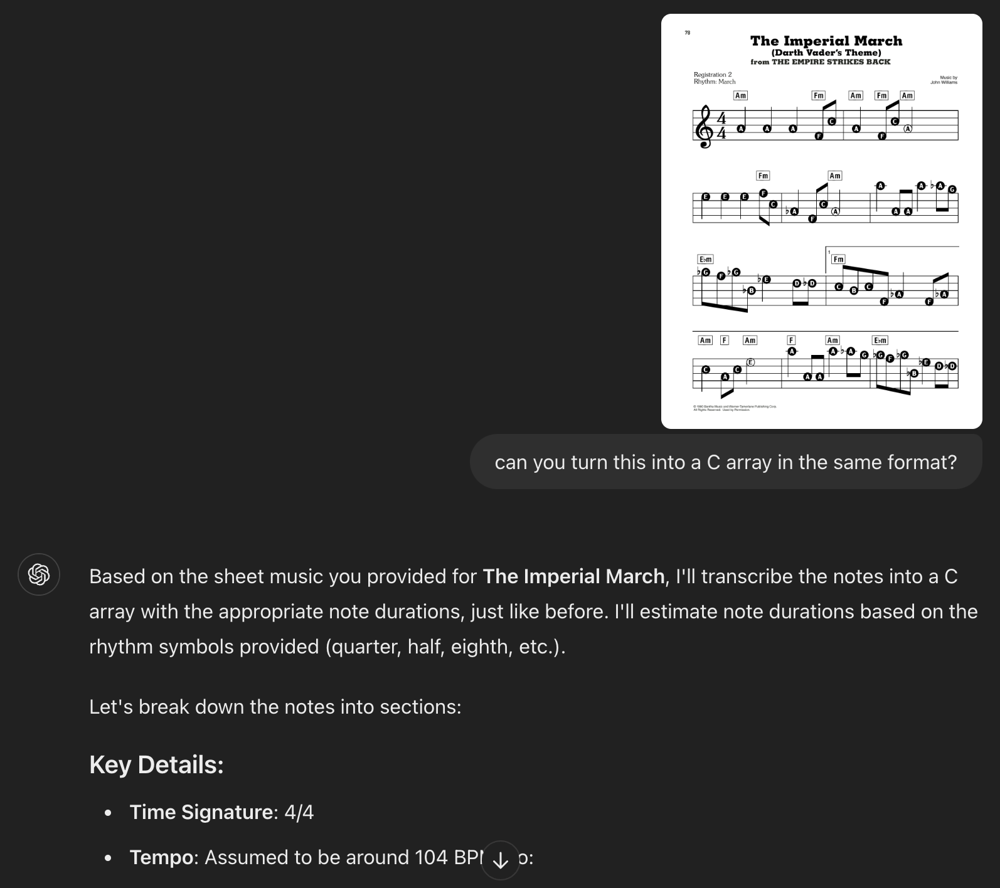

Lab 4 Reflection, and a Foray Into AI

Lab 4 was quite different from the prior labs in many ways. For starters, it represented a kind of new beginning. Labs 1 through 3 had all focused on using the FPGA, and had built on each other in a clear way. Lab 1 created the display system, Lab 2 doubled it, and Lab 3 refined the user input experience. Code was recycled, features were added, and the process felt iterative and like a deepening of learning in one particular area. In contrast, Lab 4 was all about learning new microcontroller memory structures, syntax, and modes of thinking.
My AI Background
Now, before I go into more detail, it is worth mentioning what kind of background I have with AI – or, more accurately, I should say with ChatGPT. The answer is slim to none. I didn’t use it at all my Junior year in college, and only used it my sophomore year for some help writing effective thesis statements and summary conclusions. I found that I just didn’t trust it for much else, and even when I did, ended up spending about as much time trying to come up with a good prompt and refining my search. It felt like I got more learning for the same amount of time input, so I just kind of ignored the service.
Flash forward to this week and ChatGPT has made somewhat of a resurgence in my world. It started when I was working next to Ket on Lab 4, and after creating my timer structures, I asked if I could see what his looked like to see if my syntax and ordering made sense. He said that he hadn’t gotten to that portion yet, and so I continued on for another about 5 minutes until he said he was ready to check. After he showed me his structure, I was shocked to see that it was as thoroughly commented as mine was, and matched nearly exactly. It took me 15+ minutes to check, double check, and add in thorough commenting – how had he made nearly the same product in 5? Turns out, he had written the structure by hand, written a comment format that he wanted, then asked ChatGPT to populate the rest of the comment fields with the appropriate offset and name of the register.
Two things surprised to me about this. Firstly, that it nearly exactly matched the human-generated version that I had written. I think it speaks to how far models have come, even under the hood in the past two years. Secondly, I was surprised that I felt a drive in me to engage more with AI for these kinds of tasks. I have found myself to be otherwise very wary of ChatGPT, and I wasn’t expecting this new excitement to rise up. But as I sit here now, I’m thinking about applying it in areas where I’ve already done the hard part – I just need help expanding, commenting, or defining.
ChatGPT in Lab 4
This manifested itself in one main way in Lab 4. After I had completed my music playing system, I wanted to implement a song of my own choosing. Intentionally wanting to experiment with ChatGPT as I wrote this optional addendum to my work, I first used ChatGPT to generate a list of ideas of songs that were clearly recognizable and simple to generate with a pure tone buzzer. After it gave me a standard list of Happy Birthday, Twinkle Twinkle Little Star, and Jingle Bells, I prompted it to come up with some more fun and interesting ideas for a young and nerdy college audience. This one was much more fun: Seven Nation Army, Super Mario Bros, Sweet Caroline, Blinding Lights… and the Imperial March from Star Wars! Inspired, I quickly chose a piece of sheet music and set about transcribing it into a C array of Frequencies and Durations.
I ran into a barrier rather quickly, however – in fact, immediately. I don’t know how to read sheet music. This generated my next idea: Can ChatGPT take in images, and given the proper instructions, translate this into a playable C array? The answer: yes and no, but mostly no. Although it did generate a C array in my requested format, when I tried to play it, only the first three notes sounded right. After investigation and some learning on basic music theory, I realized that while most of the frequencies were correct, ChatGPT had made all of the timings the same, at a quarter note. News flash – the Imperial March does not have only quarter notes. So, I went about transcribing and correcting the output by hand, testing as I went.
It took me another about 30 minutes to give up on this idea. No matter what I tried, or how I tried to break up the timing and add rests, it wasn’t playing correctly. It was around this point that I realized that the flaw might have been in the sheet music I found, or at least in my understanding of how to read the sheet music. It showed no visible rests, but some were clearly missing from what the tune should have sounded like. So, I moved to pivot to a new idea.
At this impasse, I considered that somebody else had probably done this before. A quick google search pulled up Profe-Electro, an electronics Youtube creator, who had implemented a similar frequency and delay buzzer system on an Arduino. However, his system used the Arduino library of functions and a different format and note structure. This gave me my next idea – could ChatGPT translate this Arduino song into the same format that it had successfully generated for me previously? The answer: yes! After again asking ChatGPT to create me a list of define statements that mapped the sequence of notes to their frequency, I was able to easily implement the system into my C code and run the Imperial March.
Conclusion
So, what came of this exploration? I learned that it was still very much possible to ask too much of ChatGPT. Whether its image recognition isn’t good enough yet, or my request caused it to jump over one too many hurdles, the result was clear – it couldn’t yet perform my whole task for me. However, it was effective at helping me with three parts of the lab. Firstly, it was great for brainstorming songs, and asking it which parts of the songs would be best translated into a buzzer song. Secondly, it was great for answering simple music theory questions that otherwise would have taken me a lot longer on Google. Finally, it was great for the tedious tasks – taking someone else’s existing ideas and translating them into a new format, or generating a list of macros for known frequencies.
I think I could still do a lot to improve my use of AI – after all, this was my first week since 2022 that I gave it a concerted effort. I have a lot of room to improve my prompts, and I need to tinker more to refine my idea of what ChatGPT is actually good at. I’m not worried that I’ll become overconfident with my use of ChatGPT. I’m far more likely to quit using it because I feel that I cannot trust or rely on it (which we already know you can’t). So, I think it’s going to be a balancing act. I want to try to use it in scenarios where I can easily verify a non-mission critical output, but when the output myself requires repetition and simple translation. I like to imagine a world where I can expand this use in my future coding work, but for now, I just don’t have the confidence in ChatGPT’s work.